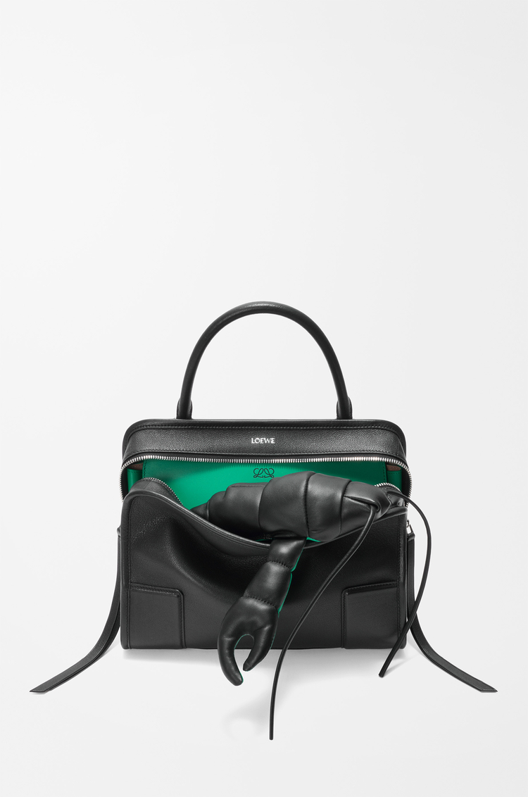
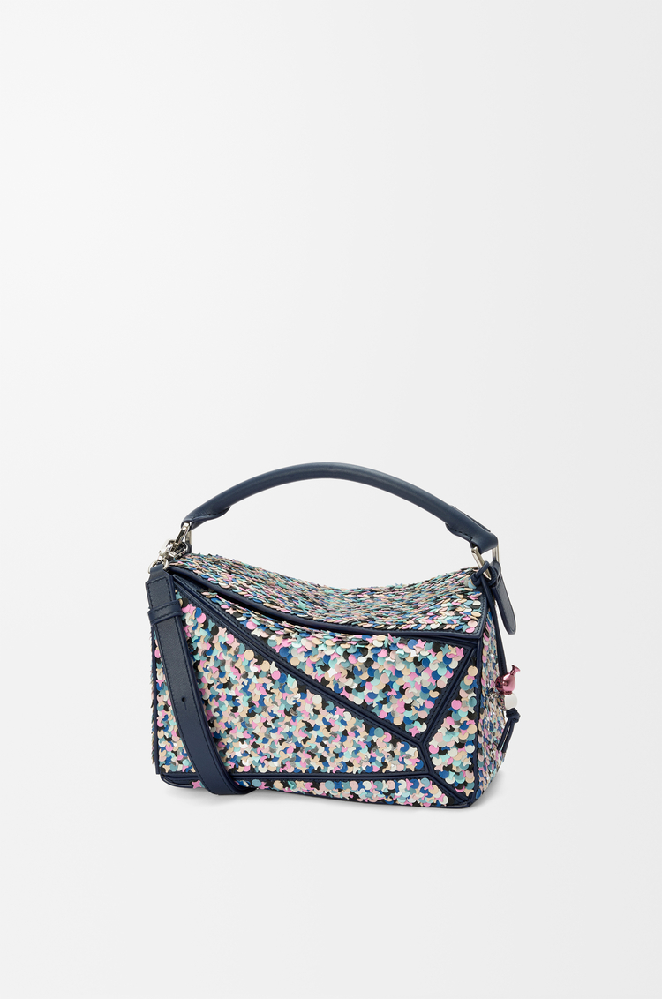
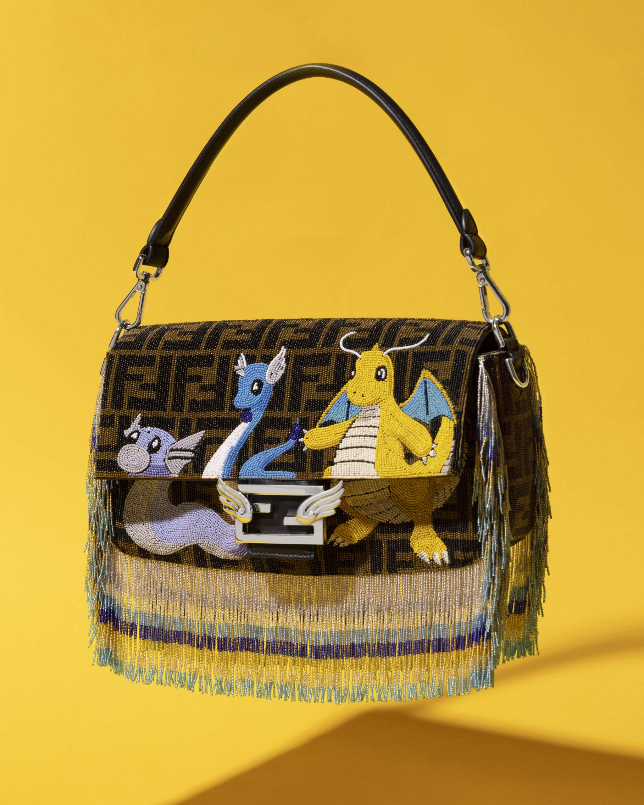
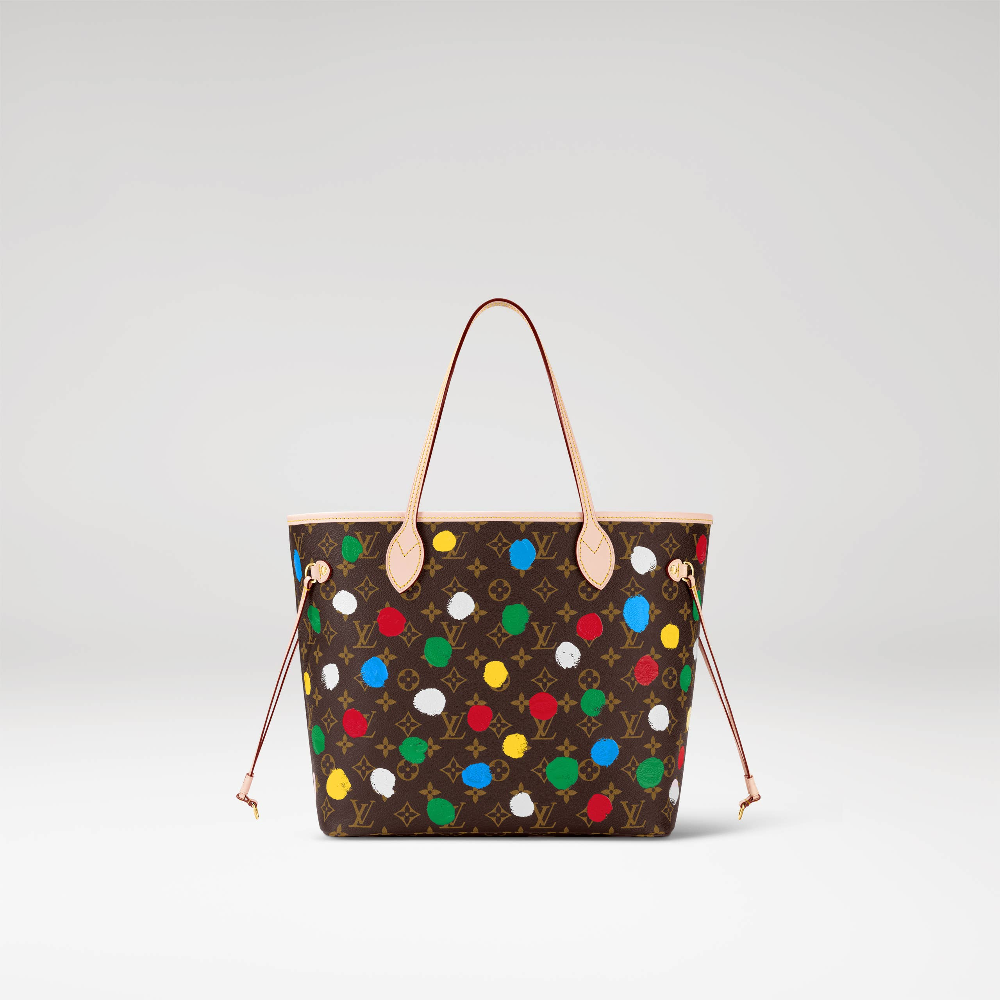
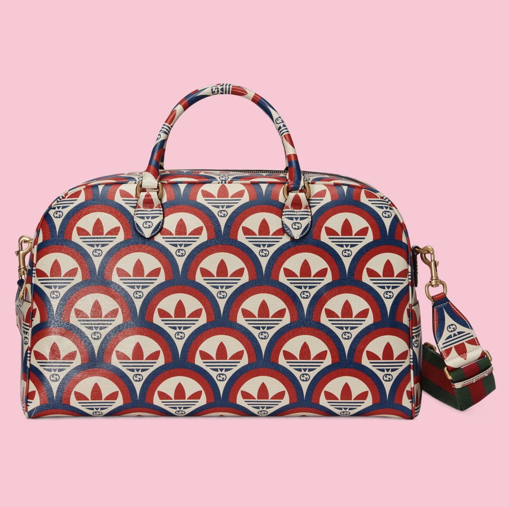

2026 / Most wanted
2026 / Most wantedCHANEL
Maxi Flap Bag — Camel Grained Calfskin (Métiers d’art 2026)
The Maxi Flap makes its point through scale and surface.
US$9,600Explore ↗
Official US suggested retail · checked 19 Oct 20262022—2026 / THE MUSELUX ARCHIVE
Five years of changing silhouettes.
Explore four popular bags and two limited or special editions from each year.
Each year's four popular picks form an editorial shortlist based on dated demand reports and editorial coverage. Source ranks refer to their stated quarter or period; the edit is not a universal annual sales ranking. A current photograph may show a later colour or material variant of a design family that was popular in the selected year; the pictured reference is identified on its detail page.
Edition labels distinguish numbered editions, explicit limited releases and seasonal capsules. A capsule label does not imply a fixed production quantity. Prices remain in USD, with current retail references, dated reported prices and any unavailable prices clearly identified. The 2026 edit covers evidence available by 19 October 2026.
Read about The Lyst Index ↗2026 / FORM & CULTURE
In 2026, familiar bags take on more expressive proportions: an expansive flap, a belted rectangle, an exposed opening and a soft crescent. Anniversary colour and an artist’s playful intervention round out this year-to-date edit, following the year’s fashion attention through 19 October.
2026 / Most wantedThe Maxi Flap makes its point through scale and surface.
 2026 / Most wanted
2026 / Most wantedThe Bonnie’s long body and upright handles create two distinct rhythms: a low horizontal line at the hip, then a narrow arch above it.
 2026 / Most wanted
2026 / Most wantedThe Amazona 180 turns an opening into the design’s main event.
 2026 / Most wanted
2026 / Most wantedThe small Toujours Hobo translates Dior’s geometric Cannage pattern into a rounded silhouette.
Numbered editions, limited releases and collaboration capsules are labelled individually.
 2026 / 2026 Monogram 130th-anniversary capsule
2026 / 2026 Monogram 130th-anniversary capsulePastel green gives the Speedy’s compact travel shape a fresh register.

2026 / Fall/Winter 2026 artist special editionA reclining crab turns the Amazona 180’s exposed opening into a small stage.
2025 / FORM & CULTURE
The 2025 edit pairs two Lyst-recognized compact bags with the reissued Chloé Paddington and Prada’s softly gathered Dada. The collector selection returns to LOEWE’s Puzzle 10 anniversary: Confetti was a new celebratory design, while Plumeria revisited an earlier floral idea. Both carry explicit official limited-edition evidence.
 2025 / Most wanted
2025 / Most wantedGaby gives the vanity-case silhouette a distinctly Saint Laurent finish.
 2025 / Most wanted
2025 / Most wantedMiu Miu’s Cocoa Brown suede pouch is a compact expression of the house’s informal mood.
 2025 / Most wanted
2025 / Most wantedThe revived Paddington brings Chloé’s oversized padlock back into a softly slouched daily bag.
 2025 / Most wanted
2025 / Most wantedDada uses a narrow belt to give soft black nappa leather a gently gathered outline.
Numbered editions, limited releases and collaboration capsules are labelled individually.

2025 / Puzzle 10 limited original editionConfetti makes the Puzzle’s tenth anniversary feel like a celebration you can carry.
 2025 / Puzzle 10 limited re-edition
2025 / Puzzle 10 limited re-editionPlumeria brings a floral surface to the Puzzle’s precise geometry.
2024 / FORM & CULTURE
Our 2024 edit moves from the elongated Le Teckel and tactile suede Arcadie to the relaxed Rodeo and geometric Puzzle Fold. Two special capsules add another register: Tyler, the Creator’s hand-drawn Louis Vuitton motifs and Fendi’s beaded tribute to Dragon-type Pokémon. Each selection has a dated reason for belonging to the year.
 2024 / Most wanted
2024 / Most wantedLe Teckel makes an impression through proportion.
 2024 / Most wanted
2024 / Most wantedThe suede Arcadie turns a compact rectangular handbag into a study in texture.
 2024 / Most wanted
2024 / Most wantedRodeo has the vocabulary of a polished work bag with a more relaxed posture.
 2024 / Most wanted
2024 / Most wantedThe Puzzle Fold translates LOEWE’s interest in geometry into a simple, useful tote.
Numbered editions, limited releases and collaboration capsules are labelled individually.
 2024 / Spring 2024 special capsule
2024 / Spring 2024 special capsuleTyler, the Creator’s Chocolate Craggy Monogram gives the compact Keepall a playful, deliberately irregular rhythm.

2024 / Year of the Dragon 2024 special capsuleThis Baguette combines the graphic familiarity of Fendi’s FF pattern with the animated world of Dratini, Dragonair and Dragonite.
2023 / FORM & CULTURE
The year's hot picks bring together open raffia, broad leather totes and compact matelassé satchels. Lyst's dated reports support the strength of LOEWE's raffia bags, The Row's Margaux and Miu Miu's Arcadie, while contemporary Vogue coverage documents the Andiamo's early reception. The two special capsules add character through Calcifer's flame colours and Kusama's Painted Dots.
 2023 / Most wanted
2023 / Most wantedThe Font tote makes a strong composition from a simple cuboid outline.
 2023 / Most wanted
2023 / Most wantedMargaux 15 draws attention through proportion and restraint.
 2023 / Most wanted
2023 / Most wantedAndiamo gives a familiar woven tote a distinct point of focus.
 2023 / Most wanted
2023 / Most wantedArcadie borrows the orderly outline of a small satchel, then loosens it through rippling matelassé leather.
Numbered editions, limited releases and collaboration capsules are labelled individually.
 2023 / February 2023 · LOEWE x Howl's Moving Castle capsule
2023 / February 2023 · LOEWE x Howl's Moving Castle capsuleCalcifer creates a small burst of colour inside the Puzzle's dark geometry.

2023 / January 2023 · Louis Vuitton x Yayoi Kusama artist capsuleKusama's Painted Dots give the Neverfull a second rhythm over its familiar Monogram.
2022 / FORM & CULTURE
Compact shoulder bags captured the year's taste for nostalgic proportions, bold hardware and richly worked surfaces. These four evidence-led hot picks move from Prada's spare nylon to Diesel's graphic plaque and Miu Miu's gathered leather. Two archive capsules show a more playful direction through Studio Ghibli characters and adidas x Gucci's exuberant shared emblems.
 2022 / Most wanted
2022 / Most wantedA close-fitting shoulder shape gives this little black bag its easy rhythm.
 2022 / Most wanted
2022 / Most wantedThe 1DR turns a compact shoulder bag into a bold graphic object.
 2022 / Most wanted
2022 / Most wantedLe Cagole builds its character through an accumulation of small gestures.
 2022 / Most wanted
2022 / Most wantedWander compresses a generous hobo curve into a small, rounded form.
Numbered editions, limited releases and collaboration capsules are labelled individually.
 2022 / January 2022 · LOEWE x Spirited Away capsule
2022 / January 2022 · LOEWE x Spirited Away capsuleTiny soot sprites make the Puzzle's angular panels feel unexpectedly animated.

2022 / June 2022 · adidas x Gucci launch capsuleA repeating Trefoil and Interlocking G pattern gives this duffle the exuberance of a vintage sporting poster.
USD references are labelled by their price date and basis. Archive prices are not live offers; confirm current availability with the brand or the named source.